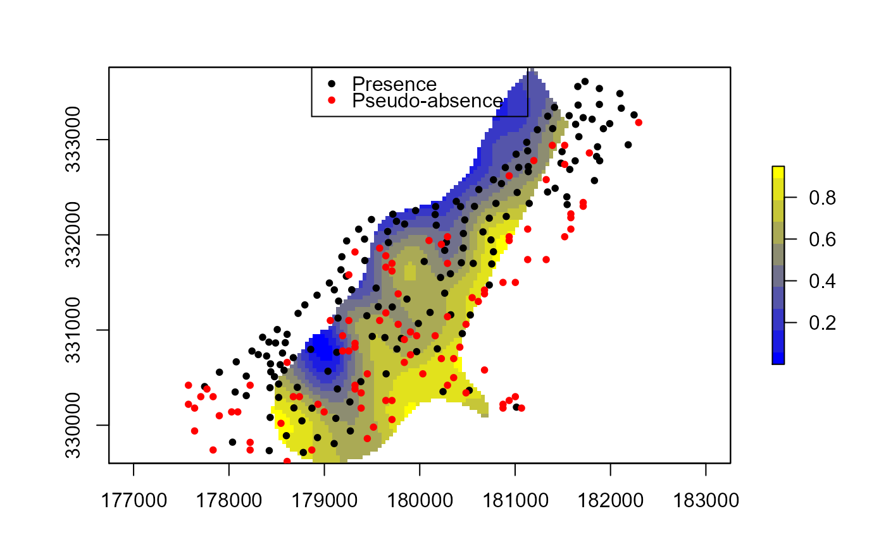
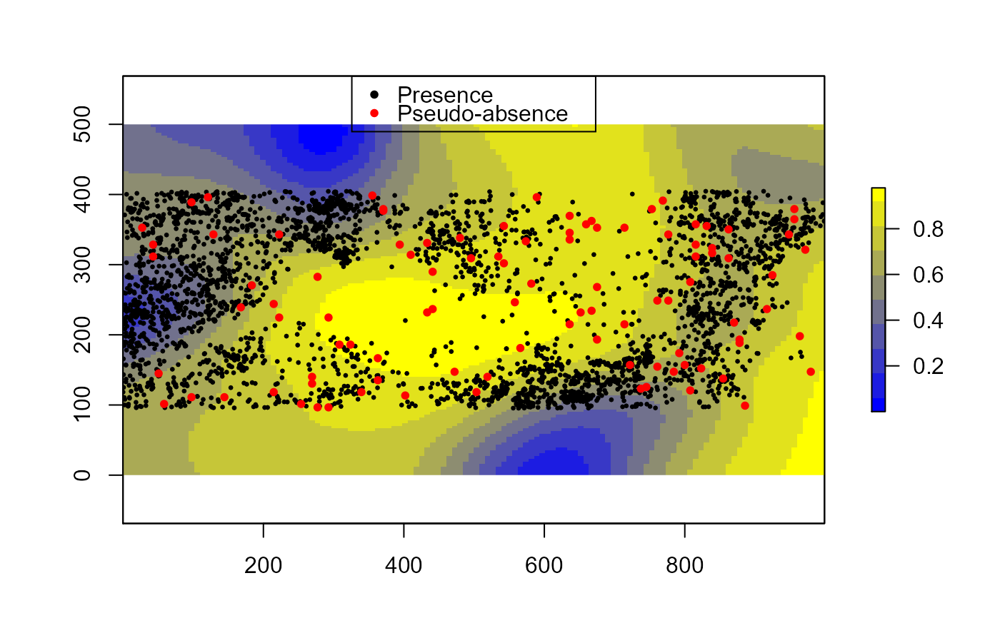

Generates pseudo-absence samples based on density estimate of known locations
pseudo.absence( x, n, window = "hull", Mask = NULL, s = NULL, sigma = "Scott", wts = NULL, KDE = FALSE, gradient = 1, p = NULL, edge = FALSE )
| x | An sp class SpatialPointsDataFrame or SpatialPoints object |
|---|---|
| n | Number of random samples to generate |
| window | Type of window (hull OR extent), overridden if mask provided |
| Mask | Optional rasterLayer class mask raster. The resolution of the density estimate will match mask. |
| s | Optional resolution passed to window argument. Caution should be used due to long processing times associated with high resolution. In contrast, coarse resolution can exclude known points. |
| sigma | Bandwidth selection method for KDE, default is 'Scott'. Options are 'Scott', 'Stoyan', 'Diggle', 'likelihood', and 'geometry' |
| wts | Optional vector of weights corresponding to point pattern |
| KDE | save KDE raster (TRUE/FALSE) |
| gradient | A scaling factor applied to the sigma parameter used to adjust the gradient decent of the density estimate. The default is 1, for no adjustment (downweight < 1 | upweight > 1) |
| p | Minimum value for probability distribution (must be > 0) |
| edge | Apply Diggle edge correction (TRUE/FALSE) |
A list class object with the following components:
sample SpatialPointsDataFrame containing random samples
kde sp RasterLayer class of KDE estimates (IF KDE = TRUE)
sigma Selected bandwidth of KDE
The window type creates a convex hull by default or, optionally, uses the maximum extent (envelope). If a mask is provided the kde will represent areas defined by the mask and defines the area that pseudo absence data will be generated.
Available bandwidth selection methods are:
Scott (Scott 1992), Scott's Rule for Bandwidth Selection (1st order)
Diggle (Berman & Diggle 1989), Minimize the mean-square error via cross validation (2nd order)
likelihood (Loader 1999), Maximum likelihood cross validation (2nd order)
geometry, Bandwidth is based on simple window geometry (1st order)
Stoyan (Stoyan & Stoyan 1995), Based on pair-correlation function (strong 2nd order)
User defined numeric distance bandwidth
Note; resulting bandwidth can vary widely by method. the 'diggle' method is intended for selecting bandwidth representing 2nd order spatial variation whereas the 'scott' method will represent 1st order trend. the 'geometry' approach will also represent 1st order trend. For large datasets, caution should be used with the 2nd order 'likelihood' approach, as it is slow and computationally expensive. finally, the 'stoyan' method will produce very strong 2nd order results.
Berman, M. and Diggle, P. (1989) Estimating weighted integrals of the second-order intensity of a spatial point process. Journal of the Royal Statistical Society, series B 51, 81-92.
Fithian, W & T. Hastie (2013) Finite-sample equivalence in statistical models for presence-only data. Annals of Applied Statistics 7(4): 1917-1939
Hengl, T., H. Sierdsema, A. Radovic, and A. Dilo (2009) Spatial prediction of species distributions from occurrence-only records: combining point pattern analysis, ENFA and regression-kriging. Ecological Modelling, 220(24):3499-3511
Loader, C. (1999) Local Regression and Likelihood. Springer, New York.
Scott, D.W. (1992) Multivariate Density Estimation. Theory, Practice and Visualization. New York, Wiley.
Stoyan, D. and Stoyan, H. (1995) Fractals, random shapes and point fields: methods of geometrical statistics. John Wiley and Sons.
Warton, D.i., and L.C. Shepherd (2010) Poisson Point Process Models Solve the Pseudo-Absence Problem for Presence-only Data in Ecology. The Annals of Applied Statistics, 4(3):1383-1402
Jeffrey S. Evans <jeffrey_evans@tnc.org>
library(raster) library(sp) data(meuse) data(meuse.grid) coordinates(meuse) = ~x+y coordinates(meuse.grid) = ~x+y proj4string(meuse.grid) <- CRS("+init=epsg:28992")#> Warning: Discarded datum Amersfoort in Proj4 definitiongridded(meuse.grid) = TRUE r <- raster(meuse.grid) # Using a raster mask pa <- pseudo.absence(meuse, n=100, window='hull', KDE=TRUE, Mask = r, sigma='Diggle', s=50) col.br <- colorRampPalette(c('blue','yellow')) plot(pa$kde, col=col.br(10))# With clustered data library(sp) library(spatstat.core) data(bei) trees <- as(bei, 'SpatialPoints') trees <- SpatialPointsDataFrame(coordinates(trees), data.frame(ID=1:length(trees))) trees.abs <- pseudo.absence(trees, n=100, window='extent', KDE=TRUE) col.br <- colorRampPalette(c('blue','yellow')) plot(trees.abs$kde, col=col.br(10))